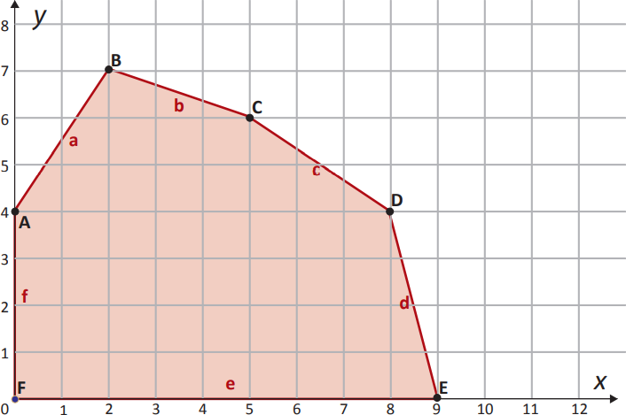

Em um sistema computacional avalia-se o desempenho no uso de dois tipos de memória secundária por meio de programação linear. No gráfico apresentado cada eixo representa a quantidade de posições de memória de cada tipo e a região colorida representa, de forma contínua, o conjunto de soluções viáveis (região viável).

As arestas da região viável foram definidas pelas diversas restrições observadas para os dois tipos
de memória. Com base no gráfico, o máximo desempenho do sistema, representado pela variável
, é de